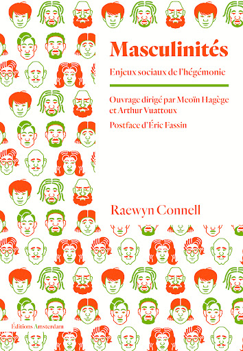
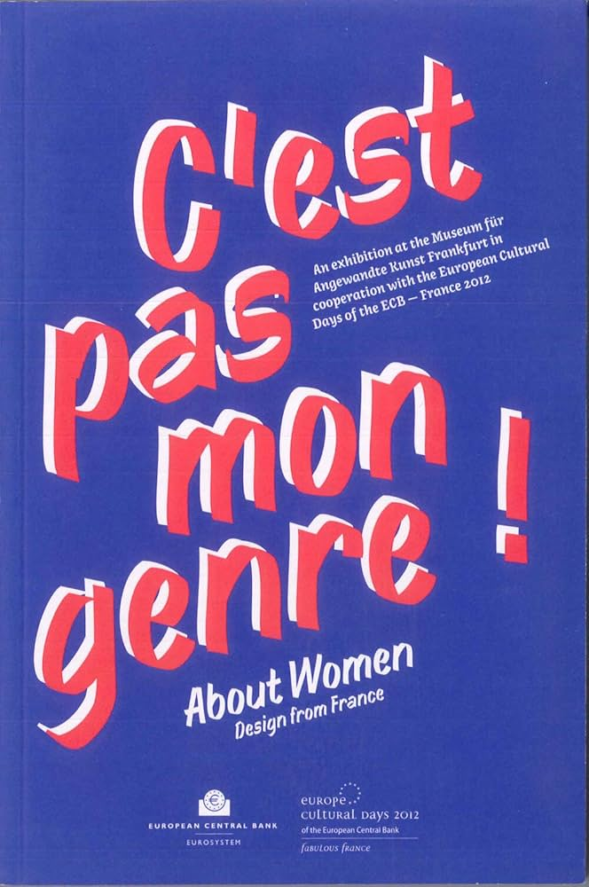
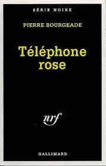

Bibliothèque
Alpha mâle. séduire les femmes pour s’apprécier entre hommes
Paris, Seuil, 2017
On ne naît pas mec
Paris, Zones, 2022
Les Rites de passage
Paris, éditions Picard, 1992 (1909)
Queer Phenomenology: Orientations, Objects, Others
Paris, Durham, Duke University Press, 2006
La sexualité et sa répression dans les sociétés primitives
Paris, Payot et Rivages, 2000, (1929)
Le deuxième sexe
Paris, Gallimard, 1949

Masculinités. Enjeux sociaux de l’hégémonie
Traduit sous la direction de Meoïn Hagège et Arthur Vuattoux, Paris, éditions Amsterdam, 2014
Psychanalyse de l’aéroport international
Cognac, 369 Éditions, 2018
Moeurs et sexualité en Océanie
Paris, Pocket, 2016, (1935 et 1938)
The Queer Art of Failure
Université Duke, John Hope Franklin Center Book, 2011
Histoire de la séxualité : La Volonté de Savoir
Paris, Gallimard, 1976
Porporino ou les mystères de Naples
Paris, Grasset, 1974
L’homme désincarné, du corps charnel au corps fabriqué
Paris, Gallimard,2019
Messieurs, encore un effort
Paris, Flammarion, Paris, 2024
Les cinq sexes: pourquoi mâle et femelle ne sont pas suffisants
Paris,Payot, 2018, (1993)
L'odyssée de Pénélope
Paris, Robert Laffont, 2022, (2005)

Textual Poachers: Television Fans and Participatory Culture
New York, Routledge, 2012
La femme et le travesti
Arles, Rouergue, 2012
Trouble dans le genre
Paris, Éditions La Découverte, 2006 (1990)
Les bouches inutiles
Paris, Gallimard, 1945
King Kong Theorie
Paris, Grasset, 2007
Le corps des autres
Paris, Raconter La Viel, 2015
S’habiller en politique: les vêtements des femmes au pouvoir, 1936-2022
Paris, Coédition MAD/ Ecole du Louvre/Palais du Louvre, 2022
Théorie du Genre
Paris, Le livre de Poche, 2016
La réalité virtuelle: avec ou sans le corps?
Paris, Autrement, 2005
Abécédaire du cosplay: dictionnaire de l’art du travestissement en pop culture
Grenoble, Glénat, 2017
Ces hommes qui m’expliquent la vie
Paris, Points, 2021 (2018)
SCUM Manifesto
Paris, Mille et Une Nuits, 2021 (1967)
Le jour où je me suis déguisé en fille
Paris, Gallimard Jeunesse, 2010
Madame Bovary
Paris, Folio, 2001 (1857)
Testo Junkie, sexe drogue et biopolitique
Paris, Grasset, 2008
Malaise dans la société de consommation
Caen, EMS, 2017

C’est pas mon genre!
Saint-Etienne,Cité du design et Banque Centrale Européenne, 2012
Cruiser l’utopie - L’après et ailleurs de l’advenir queer
Traduit par WAMBERGUE Alice, Montreuil, Brook, 2021, (2009)
Qui a peur de la théorie queer?
Paris, Les presses de science po, 2018

Téléphone Rose
Paris, Gallimard, 1999
Female Masculinity
Duke university Press, (1998)
La Dialectique du sexe
Paris, Stock, traduit par GLEADOW Sylvia, 1972, (1970)

“La non-mixité: une nécessité politique. Domination, ségrégation et auto-émancipation”
lmsi.net, 2017, URL:https://lmsi.net/La-non-mixite-une-necessite (consulté le 1.12.2024)
“Ne pas ressentir un amour inconditionnel pour son bébé dès le premier regard, est-ce normal?”
Youtube.fr, 2024. URL: https://www.youtube.com/watch?v=L3KjApKC53E, (consulté le 27.11.2024)
“ Qu’est-ce que l’intersexuation? “
Question sexualité.fr,URL: https://questionsexualite.fr/connaitre-son-corps-et-sa-sexualite/le-corps-et-son-fonctionnement/qu-est-ce-que-l-intersexuation (consulté le 12.08.2024).
“Réfléxion queer sur les communautés furry et cosplay: Enjeux de l’identité sexuelle dans le jeu vidéo”
implications-philosophiques.org, 2016, URL : https://www.implications-philosophiques.org/reflexion-queer-sur-les-communautes-furry-et-cosplay/#:~:text=Dans%20le%20cas%20des%20furries,m%C3%AAme%20de%20r%C3%A9alit%C3%A9%20et%20virtualit%C3%A9. (consulté le 26.11 2024)
Entre sexe et genre, la voie de l’opéra
Revue Topique, 2014 URL : https://shs.cairn.info/revue-topique-2014-3-page-19?lang=fr (consulté le 9.12.2024)
“The cat, the reverend and the slave”
Interview par LAQUITTANT Joris, faispasgenre.com, URL: https://faispasgenre.com/2011/11/alain-dela-negra-interview/,
3 novembre 2011, (vu le 9.12.2024)
"Le crime dit “passionnel”: des hommes malades de l’appropriation des femmes”
EMPAN, 2009 URL: https://shs.cairn.info/revue-empan-2009-1-page-40?lang=fr (consulté le 9.12.2024)
“La grossesse, tabou de l’art”, Vénus s’épilait-elle la chatte
Podcast, 23 septembre 2020 URL: https://www.venuslepodcast.com/episodes/la-grossesse%2C-tabou-de-l'art (consulté le 9.12.2024)
“Les sacrifiées du romantisme”, Vénus s’épilait-elle la chatte
Podcast, 2 avril 2022 URL: https://www.venuslepodcast.com/episodes/les-sacrifi%C3%A9es-du-romantisme (consulté le 9.12.2024)
Épisode 3x01 Adama et Yves, Contes et légendes du queeriqoo
2 juillet 2023 URL: https://podcast.ausha.co/queeriqoo/3x01-adama-et-yves (consulté le 9.12.2024)
La non mixité, outil émancipateur ou dérive identitaire?
MUCEM- Musée des civilisations de l’Europe et de la Méditerranée, Podcast publié en septembre 2023 URL: https://www.mucem.org/programme/la-non-mixite-outil-emancipateur-ou-derive-identitaire (consulté le 9.12.2024)